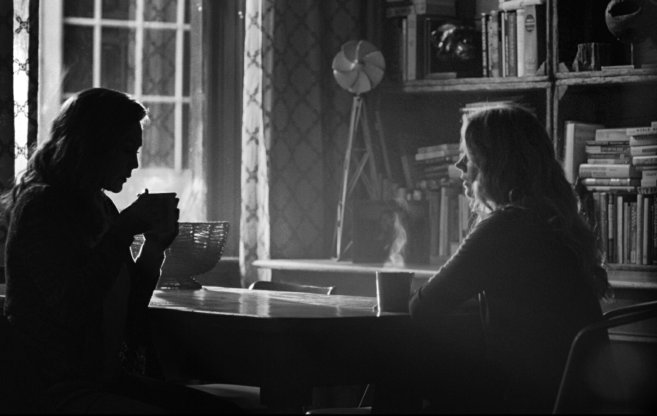

The Original Zack Snyder Cut is more in length and a very serious story than what the audience experianced at theaters Warner Brothers CEO supervised J.Whedon & Snyder to make it more MARVEL than being an original DC Comic movie
The Original Zack Snyder Cut is more in length and a very serious story than what the audience experianced at theaters Warner Brothers CEO supervised J.Whedon & Snyder to make it more MARVEL than being an original DC Comic movie
BREAKING THE ACT STRUCTURE OF BATMAN V SUPERMAN: DAWN OF JUSTICE ULTIMATE EDITION BY M.SCHINKE GREETINGS AND WELCOME BACK, OPINIONNERDS… (Note: This article has been updated to reflect a new evaluation in regards to there second turn in act 9) This is a piece that has been a long time a-comin; not because it has taken me this long to write it, but because it’s taken me this long to decide to write it. In the almost two years since the theatrical release of director Zack Snyder’s Batman v Superman: Dawn of Justice the movie has racked up a considerable amount of criticism for it’s seemingly impenetrable structure. From the story, to the plot and to the characters themselves there has been an incredible amount of material generated that seeks to outline everything that movie does wrong. There have been a number of pieces of defense written that seek to dismantle some of the more rhetorical opinions and put aside simple issues such as a misreading of the text (as I’ve done myself) but I’ve seen very little work done to break the movies structure and lay it out in a way that attempts to show how the plot moves from piece to piece; building the story through from beginning to end. Though an understanding of the structural elements of the movie is not necessary to view and enjoy it, the issue has been raised as yet another tool to bludgeon the movie with in an attempt to completely dismantle it as a legitimate piece of work. The main criticism is that the film does not fit snugly into three acts. Of course, there are multiple reasons why this criticism is not deserved for this film. I’m not going to spend too much time rehashing the information I shared in my It’s All An Act! on the similarly lambasted Man of Steel, also directed by Zack Snyder, but I will point anyone interested to this article written by FILM.CRIT.HULK, a critic and writer who has grudgingly earned my respect, as well as the glossary of JohnAugust.Com which has a couple of good definitions. In short, the three act structure is a misrepresentation of the idea that a story has three stages; a beginning, a middle and an end. While this is true it has somehow been stretched and morphed into the so often repeated idea that the structure of a play or film has, essentially, three parts to it; those parts being the individual acts. Act one is the beginning, act two the middle and act three the ending. Most likely this false idea was created as a poor extrapolation of certain styles of stage plays that feature three acts as a way to teach the basics of story structure. These acts are usually easy to peg as they occur between curtain falls, often to cover set and wardrobe changes. The three act stage play is a specific type of style which itself doesn’t even cover the vast amount of productions undertaken or the varying approaches to the writing there of. It is a simple, reductive way to illustrate story flow for people who aren’t writers, but it’s hardly a worthwhile metric to use when performing a scholarly analysis of a film. When it comes to the number of acts a screenplay can have I will reiterate the best rule I have yet seen; as many as it takes to tell your story. Now, not to get the concepts confused; an act is not exactly like a chapter in a book but how they are used is not dissimilar. When reaching the end of a chapter, or an act, ideally there would be something to propel the story into the next part. This can involve the revealing of new information, the choice of a character to engage in an action or an event that occurs outside the characters control that they have will have to deal with. Whatever the device at use, the idea is that the story now has to move forward in a new way. The act may not end specifically on this beat, but this beat will mark the end of that act. LET’S BREAK IT DOWN As we discussed in the a fore mentioned article on BvS, the films plot is broken into four separate story lines among it’s main characters. This, admittedly, puts a lot of strain on each act as they must support each characters involvement in the overall plot while providing space for each characters story to evolve. I feel an important item of note is that while a commercial film like this one does serve as an entertainment product it is still a creative, artistic endeavor. The choice to pack so much into the movie is neither right nor wrong; it simply is. It can be considered more or less successful in it’s function to communicate but there is no rule as to how much or how quickly this has to happen. A piece of writing does not need to be immediately resolvable to still be effective at communicating what it intends to; especially if the intention is for that communication to be complex. So the fact that there is so much happening in the film should not be seen as a negative. The reality of there being, “too much going on” or a film being, “overstuffed” with plots or ideas does not exist. If the storyteller feels that they were able to include all of the elements that they wanted and communicate them in the manner they intended then the film is at least a creative success on that level. The rest is up to how much an audience is willing to invest of themselves in interpreting the communication. I’ve said it before but everything you need to follow and understand this film is up there on the screen. The storytellers have done their part; the rest is up to us. So how does the film break? Honestly, cracking it seemed a daunting task at the outset of this project. The Ultimate Edition is a 3 hour film following four distinct story lines running inside an over arching plot constructed to obfuscate the main antagonists movements and motives until they all come together for the finale. There are a lot of moving parts in there and the acts tend to run very smoothly into one another with very few hard breaks. There were more than a few times when I felt a particular dramatic moment or story point would make a good break, only to find upon re-examination that information that came after was still relevant to the act, and there fore a more suitable point at which to place the break. In this instance I’ve opted to include the rough time stamps where I feel the acts begin and end for those who would like to, “check my work”. As always, I make no claims that this break down is, “correct” in any way. I’m using the tools I have to the best of my ability, and I reserve the right to be wrong. So, on that note, lets get to the raw outline before we delve into how each act works to build the story
 Header| Director | Co Director | Secondery Director | Producer |
|---|---|---|---|
| ENG | RUS | ESP | |
| Total | Final | Vision | |
“Welcome to ForSnyderCut. Your site for Snyder film appreciation and bringing to light the Snyder Cut of Justice League. Anyone with an open heart and mind is welcome, because sharing art appreciation always gives and never takes.”Zack SnyderSnyder always work on something more than 3 hours run time TOPs